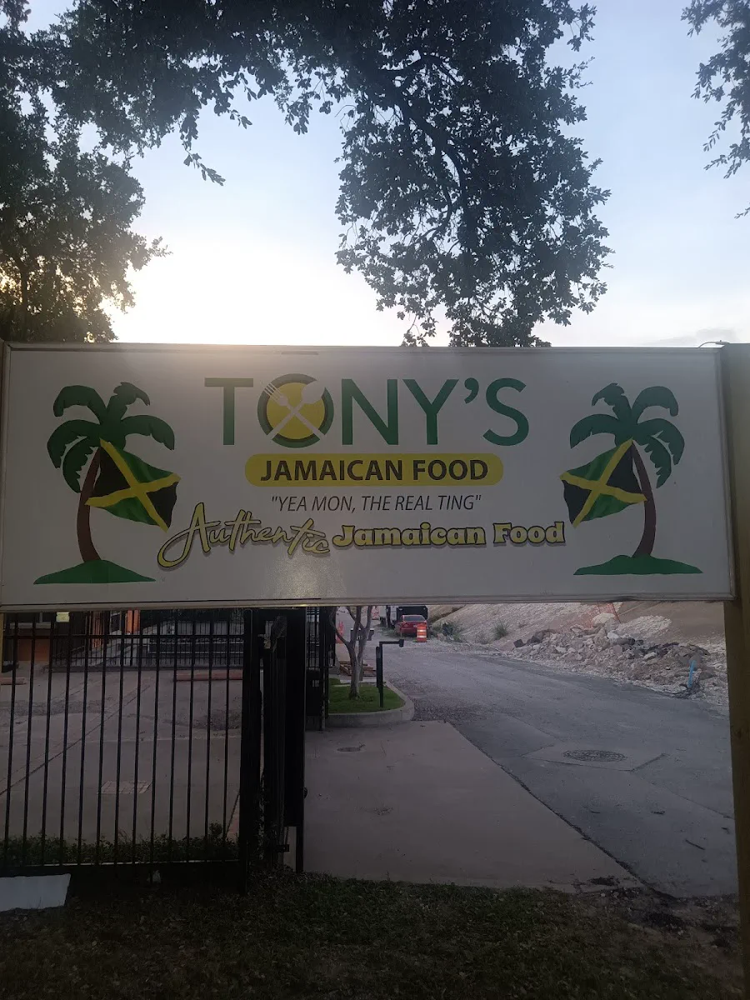
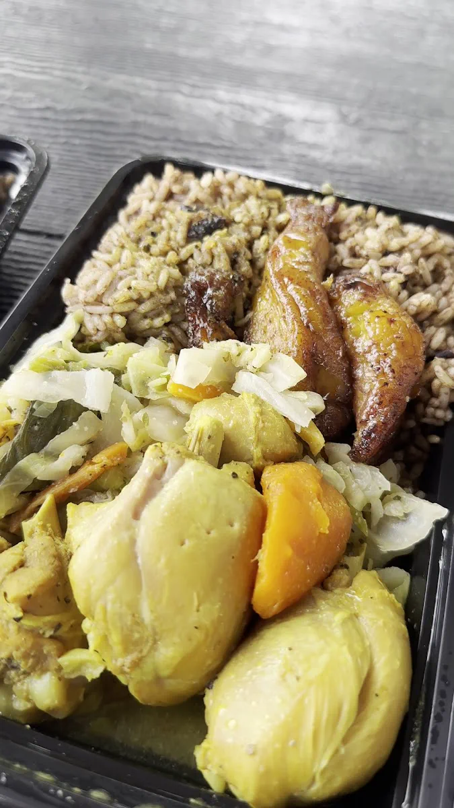
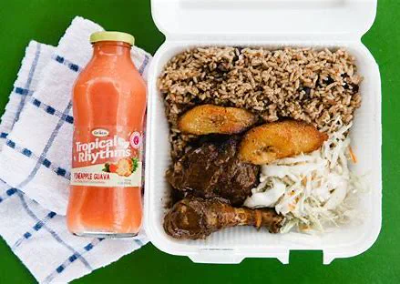
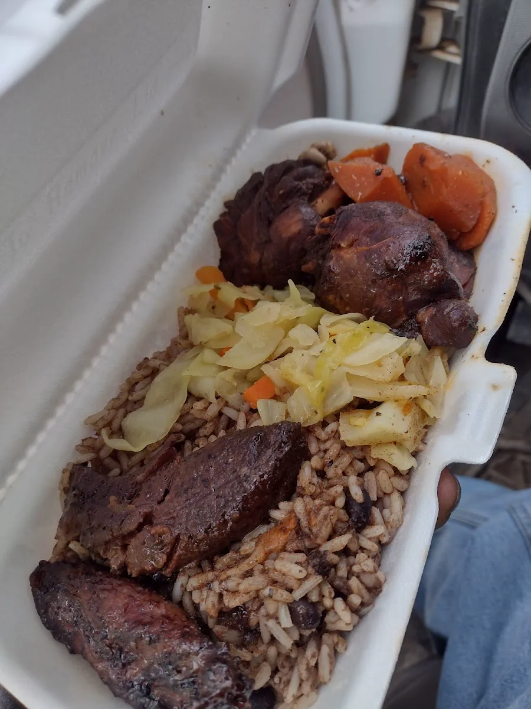
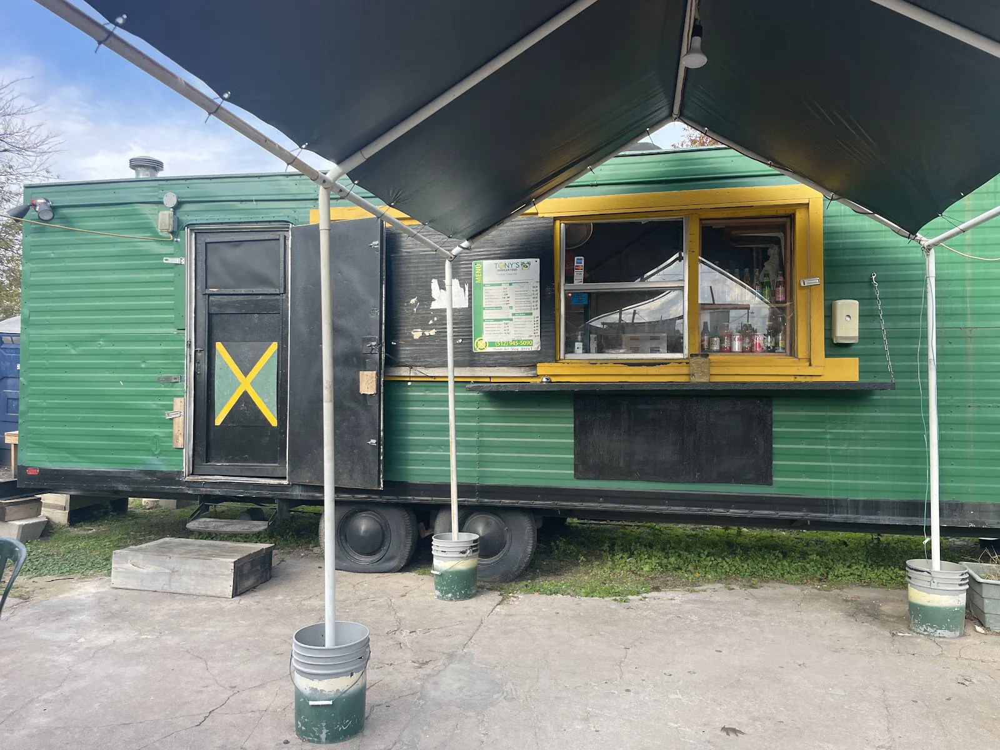

Jamaican restaurant · Austin, TX
Jamaican restaurant in Austin our customers trust
Call us · (512) 945-5090Tony's Jamaican Food Austin is a jamaican restaurant in Austin. The reviews below come straight from our customers on Google.




Straight from our Google reviews.
I'm thrilled to share my exceptional experience at Tony's Jamaican Food Truck in Austin, a hidden gem that transported me to the beautiful island of Jamaica. As a vegetarian, I was a bit skeptical about trying a Caribbean food truck, but Tony's exceeded my expectations in every way. From the moment we arrived, Tony made us feel like family. He greeted us with a warm smile and asked about our dietary preferences, making sure to recommend the best options for our group. We ordered a variety of dishes, including the Irish moss, which was hands-down the best I've ever had. The creamy texture and subtle sweetness were perfectly balanced, and I could taste the love and care that went into making it. What truly impressed me, however, was the speed and efficiency of the service. We ordered a large quantity of food, and Tony had it ready in less than 10 minutes. The quality of the food was exceptional, with generous portions and flavors that were both bold and authentic. As a vegetarian, I was pleased to find that Tony's had a variety of options that catered to my dietary needs. The vegetarian dishes were just as flavorful and satisfying as the meat-based options, and I loved the fact that Tony was happy to accommodate our requests and make modifications to suit our tastes. My friends, who are meat-eaters, were equally impressed with their dishes. We ordered a large variety of food, including jerk chicken, beef patties, and curry goat, and every single dish was a hit. The meat was tender and flavorful, and the seasonings were perfectly balanced. What I loved most about Tony's, however, was the sense of community and warmth that permeated the entire experience. Tony and his team were like a big, happy family, and they made us feel like we were part of the crew. The prices were also very reasonable, making Tony's an excellent value for the quality and quantity of food you receive. Overall, I would highly recommend Tony's Jamaican Food Truck to anyone looking for a delicious and authentic Caribbean meal in Austin. The Irish moss is a must-try, and the vegetarian options are just as flavorful and satisfying as the meat-based dishes. Rating Breakdown: Service: 5/5 Food: 5/5 Ambiance: 5/5 Value: 5/5 Overall: 5/5 Recommendation: If you're looking for a delicious and authentic Caribbean meal in Austin, look no further than Tony's Jamaican Food Truck. The Irish moss is a must-try, and the vegetarian options are just as flavorful and satisfying as the meat-based dishes. Be sure to order a variety of dishes and try the different flavors and seasonings. And don't be afraid to ask Tony for recommendations - he's happy to help and will make you feel like part of the family.
The food here was absolutely delicious!! I got here near closing and ordered a small curry chicken which was so tender and flavorful I could cut the chicken with the side of my fork and it fell off the bone. My friend had the jerk chicken and left no crumbs as it was equally tender and delicious. The rice and peas, fried plantain and cabbage that were served with it complemented the chicken so well and everything seasoned just right. Service was great, very helpful and polite, and tables and chairs provided in the shade. I will definitely be back to try the other meats like oxtail, the coco bread, and beef patty. Prices were reasonable as well.
Love this little gem! If you're looking for authentic Jamaican, this is the place to go. Absolutely loved the food. The service was quick and the owners were very kind. I think the atmosphere needs work, maybe some music and more fans for the outdoor seating. Unfortunately, the chairs and tables are either broken or wobbly. Other than that, I highly recommend it. Even if you just go pick up a plate. We had the jerk chicken and oxtail plates with plantains, rice and beans, steamed cabbage. Lastly, the Jamaican sodas are to die for...get you some!
Tried Tony’s Jamaican Food and it’s the kind of place that makes you want to order “just one more thing” even when you’re already full. The jerk has real smoky heat, the meat stays juicy, and the rice & peas tastes like it actually simmered with flavor instead of being plain filler. Portions are generous, and everything feels like it was made with care, not rushed. It can get busy, but the vibe is relaxed and worth the wait when you want a legit Jamaican comfort-food fix.